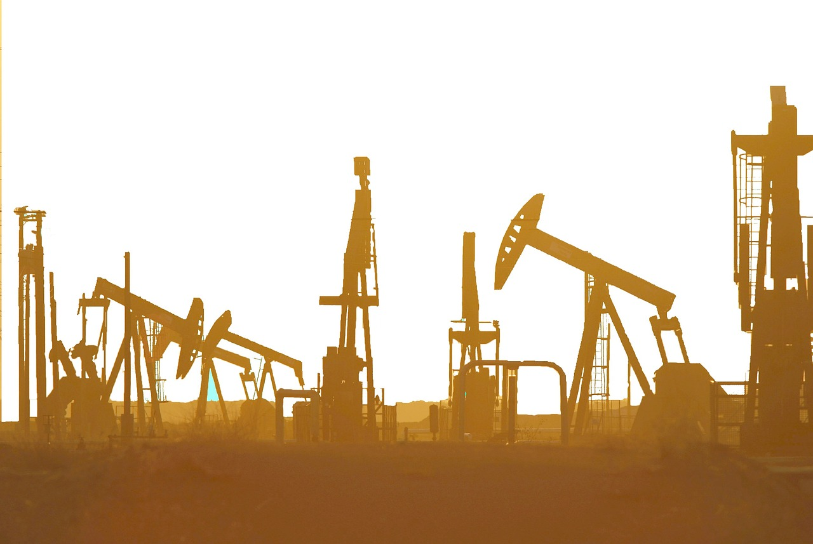

<!DOCTYPE html>
<html lang="en">

    <head>
        <meta charset="UTF-8" />
        <meta name="description" content="Humans have a huge impact on biodiversity. Deforestation, mining and drilling, and pollution all contribute to biodiversity loss.">
        <link rel="stylesheet" href="styles.css">
        <title>Biodiversity - Why Biodiversity Matters</title>
    </head>
    
    <body>
        
    </body>
    
</html>
<!DOCTYPE html>
<html lang="en">

    <head>
        <meta charset="UTF-8" />
        <link rel="stylesheet" href="styles.css">
        <title>Biodiversity - Human Impact</title>
    </head>
        <body>

            <header>
                <h1>Human Impact</h1>
            </header>

            <nav>
                <ul class="nav">
                    <li><a href="index.html">Home</a></li>
                    <li><a href="whatisbiodiversity.html">What Is Biodiversity?</a></li>
                    <li><a href="whybiomatters.html">Why Biodiversity Matters</a></li>
                    <li><a href="humanimpact.html">Human Impact</a></li>
                    <li><a href="whatcanwedo.html">What Can We Do?</a></li>
                    <li><a href="otherresources.html">Other Resources</a></li>
                </ul>
                
            </nav>
                

                <div class="humanImpactContent1">
                    <p>Human interaction with our environment is the single largest threat to biodiversity today. Biodiversity loss today is occurring at a rate 10 times faster than it ever has before, significantly faster than any creature has time to adapt and evolve to deal with. Right now, thousands of entire ecosystems are at risk of extinction due to the amount of deforestation, mining and drilling, overexploitation (like overfishing), and the introduction of invasive species through transport and shipping. The Great Barrier Reef, for example, is predicted to be completely eradicated by 2075 due to the rising CO2 levels in the ocean. The Amazon rainforest is also at significant risk due to mining and deforestation which could lead to catastrophic effects on the planet's biosphere. </p>
                </div>

                <div class="humanImpactContent2">
                    <p>In addition to deforestation, humans are mining the Earth for oil at rates never before seen. This oil gets converted into usable fuel that we can utilize to power our homes, fuel our cars, and drive infrastructure. While this all sounds great, burning this fuel releases huge amounts of CO2 into the atmosphere. CO2 cannot escape our biosphere and it ultimately gets trapped within our atmosphere, warming our planet and contaminating the very air we breathe. Not only that, but it also gets absorbed into the ocean, raising ocean temperatures. The rising temperatures and CO2 content leads to higher levels of acidity in the ocean which kills fish and destroys ecosystems.</p>
                    
                </div>

                <div class="humanImpactContent3">
                    <p>Pollution is also harmful to the environment and biodiversity. As humans use resources, waste gets created. Waste is often discarded improperly and it ends up in environments it does not belong. Litter in the streets, in the forests, and, in massive quantities, in our oceans, leads to significant health risks on human, plant, and animal life. Many waste materials are toxic to humans, animals, and plants, and as such, pose dangers to all life. Garbage in river systems erode the riverbanks which leads to the death of vital plant flora and fauna, as well as the collapse of the riverbank. Garbage in the ocean can kill fish through strangulation or consumption. 

                        In addition to the direct dangers of pollution, there are also indirect dangers. Due to the amount of plastics humans have used, consumed, and interacted with, microplastic levels in humans and animals is higher now than ever before. Studies indicate that human brains now have almost an entire plastic spoon's worth of plastics in our brains, as well as within the very amniotic fluid that our babies incubate in during pregnancy. Our babies are literally being born in a pool of plastic. While we don't know the long term ramifications of microplastics, we know that it is not natural and not healthy.</p>
                        
                </div>
            
         

        
        </body>
        
    </html>
    